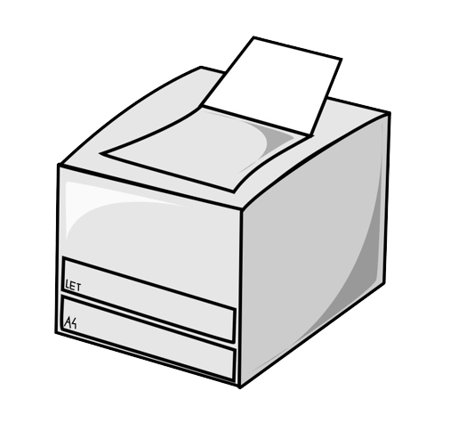
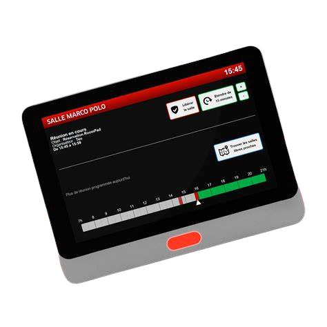
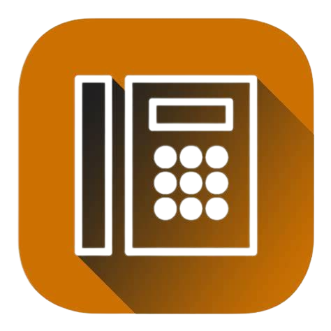

Services Forfaitaire
Accès Internet
Les ligues disposent d'un accès Internet mutualisé que la M2L loue à un prestataire extérieur.
Accès Wifi
Dans tous les espaces, un réseau Wifi "visiteurs" est disponible, avec une clé WPA renouvelée régulièrement et communiquée aux ligues. Ce réseau ne permet que l'accès à Internet.
Téléphonie
Dans les bâtiments anciens A et B, les salles et bureaux sont équipés de prises de téléphone analogiques. La M2L y fournit les combinés téléphoniques. Dans les bâtiments neufs C et D, l'équipement téléphonique est de type VoIP. La M2L loue des postes téléphoniques IP aux ligues.
Services Imprimerie
Affranchissement
Une machine à affranchir permet un affranchissement rapide et en nombre. Cette prestation est facturée aux ligues au coût de l'affranchissement. Chaque mois, on relie la machine à affranchir à une imprimante pour obtenir une liste de codes de gestion correspondant aux ligues associés à une quantité et un type d'affranchissement. La prise en compte de ces informations permet au CROSL d'éditer des factures.

Impressions en volume et en qualité imprimerie
Les ligues disposent de la possibilité d'imprimer sur des ressources d'impression numériques connectées situées dans le local reprographie du rez-de-chaussée dont l'usage fait l'objet d'une facturation à prix coûtant. Un système de comptage situé sur le serveur d'impression permet au CROSL d’effectuer une facturation mensuelle auprès des ligues.
• une photocopieuse noir et blanc à 70 pages/minute avec différents dispositifs de finition.
• une imprimante Laser couleur A4/A3 à encre solide à 25 pages/minute.
• un traceur A2 (1 page / minute) utilisé pour les affiches et banderoles.
Autres Services
Serveur FTP documentaire
La M2L met à disposition des ligues un serveur FTP documentaire intranet/internet regroupant des textes légaux, des modèles de dossiers, de statuts, des programmes de formation (...) compilés par le CROSL.

Système de réservation des salles
La M2L met à disposition des ligues un système de réservation des salles (réunions, amphithéâtre, restauration). Les réservations payantes sont facturées par la Région aux utilisateurs. L’administration de la M2L lui communique les informations nécessaires à cette facturation de façon hebdomadaire.

Information sur le digicode du jour et la clé Wifi
La M2L met à disposition des ligues un site web d'information sur le digicode permettant l'accès à la M2L ainsi que sur la clé Wifi "visiteurs". Le système de réservation donne également le digicode du jour dans le compte-rendu de réservation envoyé automatiquement par mail.
Système de gestion des configurations
M2L gère à travers un logiciel de gestion des configurations l'ensemble du parc informatique incluant les postes fixes des ligues.
Intégration des postes informatiques des ligues
Lorsque les ligues acquièrent du matériel informatique, il y a une phase obligatoire d'intégration qui consiste à :
• installer un antivirus affilié au serveur antiviral de la M2L.
• installer la dernière version de l'agent qui réalise l’inventaire matériel et logiciel.
• paramétrer le poste en adressage IP automatique.
• installer un système de sauvegarde de données sur un site FTP de sauvegarde géré par la M2L,
• effectuer les dernières mises à jour systèmes et à paramétrer leur automatisation,
• paramétrer les noms des postes selon les règles de gestion suivantes :
- B[code bâtiment]E[numéro étage]L[numéro ligue]S[numéro salle].P[numéro poste]
- Code bâtiment qui peut être A ou C
- N° étage est compris entre 1 et 4 (puisque les locaux du rez-de-chaussée n'hébergent pas de ligues)
- N° ligue sur 2 chiffres : correspond à un nombre attribué à la ligue allant pour l'instant de 01 à 24
- N° salle sur 2 chiffres : correspond aux bureaux occupés par les ligues
- N° poste sur 2 chiffres : correspond au numéro écrit sur la prise murale
Exemple : le nom d'hôte BAE2L06S01P01 correspond au poste installé sur la prise N°1 du bureau A201 occupé par la ligue de Volley, bureau situé au deuxième étage du bâtiment A.
Cette intégration est contractualisée. Les ligues et CD étant toutes des structures associatives indépendantes, leurs postes ne sont pas intégrés dans un annuaire central. Par contre, les postes de l'administration de la M2L et de la salle multimédia le sont.